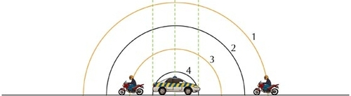
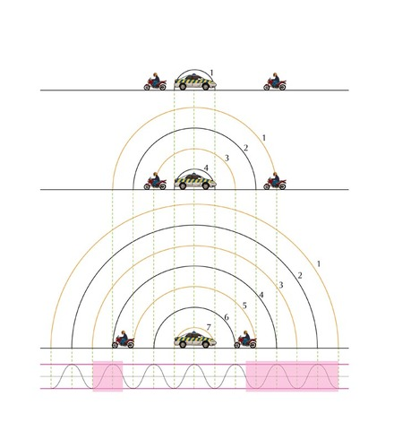
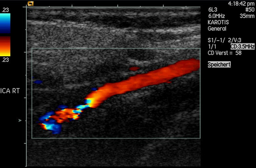

You, the person hearing the sounds, are called the observer or listener and the thing emitting the sound is called the source. As mentioned in the introduction, there are two situations which lead to the Doppler effect:
When the source moves relative to a stationary observer.
When the observer moves relative to a stationary source.
In points 1 and 2 above there is relative motion between the source and the observer.
Both the source and the observer can be moving at the same time but we won't deal with that case in this chapter.
Doppler effect
The Doppler effect is the change in the observed frequency of a wave
when the source or the detector moves relative to the transmitting medium.
The Doppler effect occurs when a source of waves and/or observer move relative to
each other, resulting in the observer measuring a different frequency of the waves
than the frequency that the source is emitting. The medium that the waves are travelling through,
the transmitting medium, is also stationary in the cases we will study.
The question that probably comes to mind is: "How does the Doppler effect come about?".
We can understand what is happening by thinking through the situation in detail.
Case 1: Moving source, stationary observer
Let us consider a source of sound waves with a constant frequency and amplitude.
The sound waves can be represented as concentric circles where each circle represents
a crest or peak as the wavefronts radiate away from the source. This is because
the waves travel away from the source in all directions and the distance between
consecutive crests or consecutive troughs in a wave is constant (the wavelength
as we learnt in Grade 10). In this figure the crests are represented by by the
black lines and the troughs by the orange lines.
Stationary sound source as more wavefronts are emmitted.
The sound source is the police car in the middle and is stationary. For
the Doppler effect to take place (manifest), the source must be moving
relative to the observer.
Let's
consider the following situation: The source (represented by the black dot) emits one wave (the black circles
represent the crests of the sound wave) that moves away from the source at the
same rate in all directions. The distance between the crests represents
the wavelength () of the sound. The closer together the crests, the higher
the frequency (or pitch) of the sound according to ,
where (speed of sound) is constant.
As this crest moves away, the source also moves and then emits more crests. Now the two circles are not concentric any more, but on the one side they are closer together and on the other side they are further apart. This is shown in the next diagram.
If the source continues moving at the same speed in the same
direction, then the distance between crests on the right of the
source is constant. The distance between crests on the left is
also constant. The distance between successive crests on the left is constant
but larger than the distance between successive crests on the right.
When a car approaches you, the sound waves that reach you have a shorter wavelength and a
higher frequency. You hear a sound with a higher pitch. When the car moves away from you, the sound waves that
reach you have a longer wavelength and lower frequency. You hear a sound with a lower pitch.
Moving sound source as more wavefronts are emmitted.
Case 2: Moving observer, stationary source
Just as we did before, let us consider a source (a police car) of sound waves with a constant
frequency and amplitude.
There are two observers, one on the left
that will move away from the source and one on the right that will move towards the source.
We have three diagrams:
shows the overall situation with the siren starting at time
;
shows the situation at time
when the observers are moving; and
shows the situation at after the observers have been moving for a time interval,
.
The crests and troughs are numbered so you can see how they
move further away and so that we can track which ones an observer has measured.
The observers can hear the sound waves emitted by the police car and
they start to move (we ignore the time it takes them to accelerate).

The frequency of the wave that an observer measures is the number of complete
waves cycles per unit time. By numbering the crests and troughs we can see
which complete wave cycles have been measured by each of the observers in time, .
To find the frequency we divide the number of wave cycles by .
In the time interval that passed, the observer moving towards the
police car observed the crests and troughs numbered 1 through 5 (the portion
of the wave is highlighted below). The observer moving away encountered a
smaller portion of the wavefront, crest 3 and trough 4.
The time interval for each of them is the same. To the observers
this will mean that the frequency they measured is different.

The motion of the observer will alter the frequency of the measured sound from a stationary source:
An observer moving towards the source measures a higher frequency.
An observer moving away from the source measures a lower frequency.
It is important to note that we have only looked at the cases where the source and observer are moving directly towards or away from each other and these are the only cases we will consider.
We didn't actually need to analyse both cases. We could have used either explanation because of relative motion. The case of a stationary source with moving observer is the same as the case of the stationary observer and the moving source because the relative motion is the same. Do you agree? Discuss with your friends and try to convince yourselves that this is the case. Being able to explain work to each other will help you understand it better. If you don't understand it, you won't be able to explain it convincingly.
For a real conceptual test, discuss what you think will happen if the source and the observer are both moving, in the same direction and at the same speed.
The formula that provides the relationship between the frequency emitted by the
source and the frequency measured by the listener is:
where is the frequency perceived by the observer (listener),
is the frequency of the source,
is the speed of the waves,
the speed of the listener and
the speed of the source.
Note: The signs show whether or not the relative motion of the source and observer is towards each other or away from each other:
Table 1
Source moves towards listener
: negative
Source moves away from listener
: positive
Listener moves towards source
: positive
Listener moves away from source
: negative
We only deal with one of the source or observer moving in this chapter.
To understand the sign choice you can think about the pictures of the motion. For the listener/observer we are using the
numerator in the equation. A fraction gets larger when the numerator gets larger so if we expect the frequency to increase
we expect addition in the numerator ().
If the numerator gets smaller the fraction gets smaller so if we expect the
frequency to decrease then it is subtraction in the numerator
().
For the denominator the reverse is true because of the fact that we divide by the denominator. The larger the
denominator the smaller the fraction and vice versa. So if we expect the motion of the source to increase the
frequency we expect subtraction in the denominator ()
and if we expect the frequency to decrease we expect addition
in the denominator ().
The siren of an ambulance emits sound with a frequency of ~. You are standing on the pavement. If the ambulance drives past you at a speed of ~, what frequency will you hear, when
a) the ambulance is approaching you
b) the ambulance is driving away from you
Take the speed of sound in air to be
~.
Analyse the question
The question explicitly asks what frequency you will hear when the source is moving at a certain speed. This tells you immediately that the question is related to the Doppler shift. The values given in the question are all in S.I. units so no conversions are required.
Determine how to approach the problem based on what is given
We know that we are looking for the observed frequency with a moving source. The change in frequency can be calculated using:
To correctly apply this we need to confirm that it is valid and determine what signs we need to
use for the various speeds. You (the listener) are not moving but we have to consider two different cases,
when the ambulance is moving towards you (a) and away from you (b).
We have been told that if the source is moving towards the observer then we will use subtraction in the
denominator and if it is moving away, addition. This means:
Determine when ambulance is approaching
Determine when ambulance has passed
Quote the final answer
When the ambulance is approaching you, you hear a frequency of ~ and when it is going away you hear a frequency of
~
What is the frequency heard by a person driving at ~ toward a factory whistle that is blowing at a frequency of ~. Assume that the speed of sound in air is ~.
Analyse the question
The question explicitly asks what frequency you will hear when the observer is moving at a certain speed. This tells you immediately that the question is related to the Doppler shift. The values given in the question are all in S.I. units so no conversions are required.
Determine how to approach the problem based on what is given
We can use:
with:
The listener is moving towards the source, so is positive and the source is stationary so .
Calculate the frequency
Write the final answer
The driver hears a frequency of ~.
A train approaches a station at a constant speed of ~ with its whistle blowing at a frequency of ~. An observer, standing on the platform, hears a change in pitch as the train approaches him, passes him and moves away from him.
Name the phenomenon that explains the change in pitch heard by the observer.
(1 mark)
Calculate the frequency of the sound that the observer hears while the train is approaching him. Use the speed of sound in air as ~.
(4 marks)
How will the observed frequency change as the train passes and moves away from the observer? Write down only INCREASES, DECREASES or REMAINS THE SAME.
(1 mark)
How will the frequency observed by the train driver compare to that of the sound waves emitted by the whistle? Write down only GREATER THAN, EQUAL TO or LESS THAN. Give a reason for the answer.
(2 marks)
[TOTAL: 8 marks]
Ultrasound and the Doppler effect
Ultrasonic waves (ultrasound) are sound waves with a frequency greater than ~ (the upper limit of human hearing). These waves can be used in medicine to determine the direction of blood flow. The device, called a Doppler flow meter, sends out sound waves. The sound waves can travel through skin and tissue and will be reflected by moving objects in the body (like blood). The reflected waves return to the flow meter where its frequency (received frequency) is compared to the transmitted frequency.
Because of the Doppler effect, blood that is moving towards the flow meter will change the sound to a higher frequency and blood that is moving away from the flow meter will cause a lower frequency.
Ultrasound can be used to determine whether blood is flowing in the right direction in the circulation system of unborn babies, or identify areas in the body where blood flow is restricted due to narrow veins. The use of ultrasound equipment in medicine is called sonography or ultrasonography.

Colour Doppler imaging of cervicocephalic fibromuscular dysplasia
Exercises
Suppose a train is approaching you as you stand on the platform at the station. As the train
approaches the station, it slows down. All the while, the engineer is sounding the hooter at a
constant frequency of ~. Describe the pitch
of the hooter and the changes in pitch of the hooter that you hear as the train approaches you.
Assume the speed of sound in air is ~.
The frequency of the sound gradually increases as the train moves towards you. The pitch increases. You would hear a higher pitched sound.
Passengers on a train hear its whistle at a frequency of ~. Anja is standing next to the train tracks. What frequency does Anja hear as the train moves directly toward her at a speed of ~? Assume the speed of sound in air is ~.
~
A small plane is taxiing directly away from you down a runway. The noise of the engine, as the pilot hears it, has a frequency times the frequency that you hear. What is the speed of the plane? Assume the speed of sound in air is ~.
You, the listener are stationary so your velocity is 0. The source is moving away from you at an unknown velocity. This velocity must be positive.
We also know that:
~
In places like Canada during winter temperatures can get as low as ~. This affects the speed of sound in air and you can use the Doppler effect to determine what the speed of sound is. On a winter's day in Canada with a temperature of ~, a source emits sound at a frequency of ~ and moves away from an observer at ~. The frequency that the observer measures is ~, what is the speed of sound?
The observer is stationary, so .
The speed of sound in air at -35 degrees celsius is
~
Cecil approaches a source emitting sound with a
frequency of ~.
How fast does Cecil need to move to observe a
frequency that is 20 percent higher?
If he passes the source at this speed, what frequency will he measure when he is moving away?
What is a practical means of achieving this speed?
Assume the speed of sound in air is ~.
First we need to determine Cecil's approach speed. The source is stationary, so .
We are given:
. Rearranging the Doppler formula:
The second part of the question asks what the frequency will be that Cecil hears after passing the source and moving away:
Converting ~ to :
.
This sort of speed could be reached if the observer was in a high-speed train or a racing car.
The approach speed is ~.
The frequency observed when moving away is ~.
A speed of ~ or equivalently, ~, could be reached if the observer was in a high-speed train or a racing car.